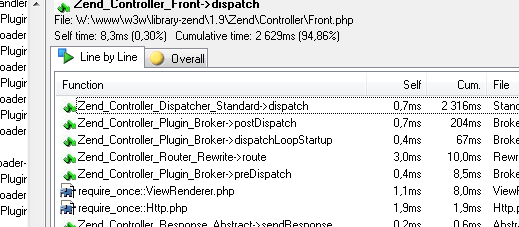

@tomasfejfar
ab -n 100 -c 1 http://localhost/
Requests per second: 6.91 [#/sec] (mean)
min mean[+/-sd] median max
Connect: 1 1 1.8 1 19
Processing: 215 276 77.2 264 948
Waiting: 196 253 76.6 241 928
Total: 216 277 77.2 266 949
[XDebug]
zend_extension = "C:\xampp\php\ext\php_xdebug.dll"
xdebug.profiler_append = 0
xdebug.profiler_enable = 1
xdebug.profiler_enable_trigger = 0
xdebug.profiler_output_dir = "C:/xampp/tmp/grind"
xdebug.profiler_output_name = "%t-%s.cgrind"

$profiler = MyProject_Db_Profiler();
$profiler->setEnabled(true);
$params['profiler'] = $profiler;
$db = Zend_Db::factory('PDO_MYSQL', $params);
// ...
$profiler->getQueryProfiles();
setCache()Translate, Locale, Db_TableCache::getCache();
Cache::getForeverCache();
//$convenience++;